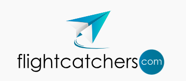
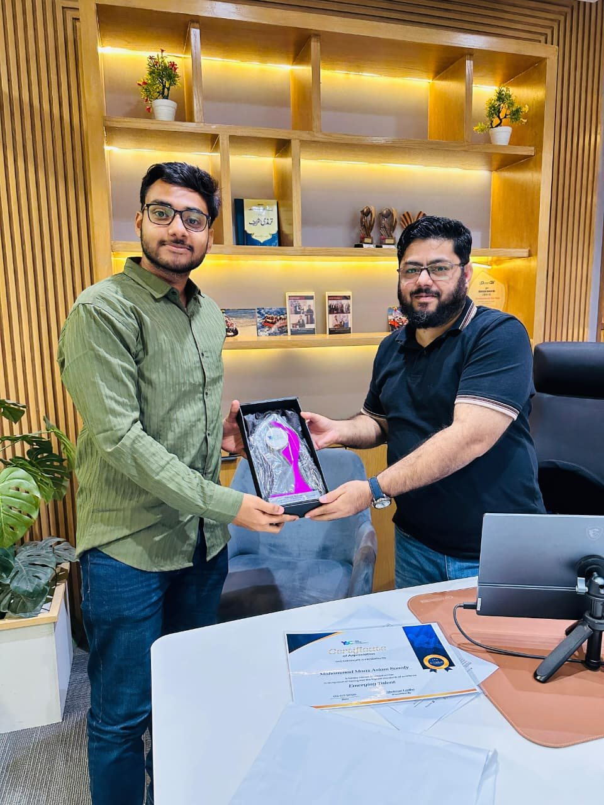
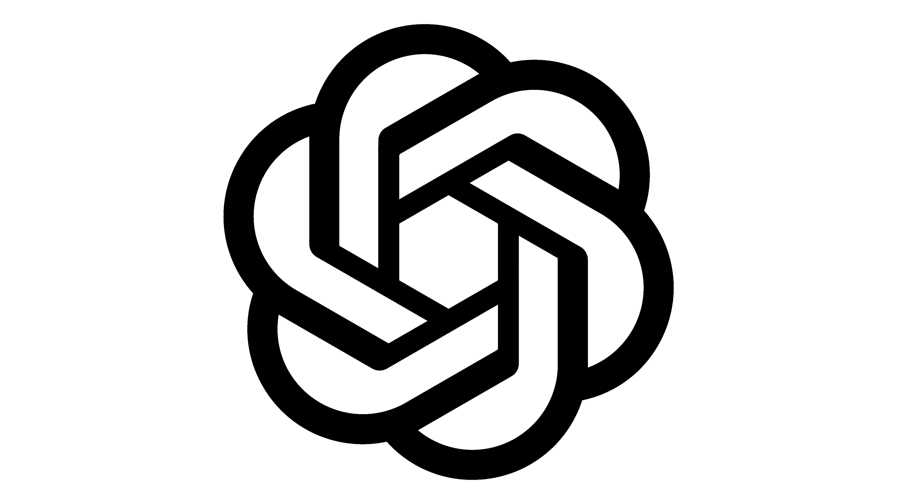
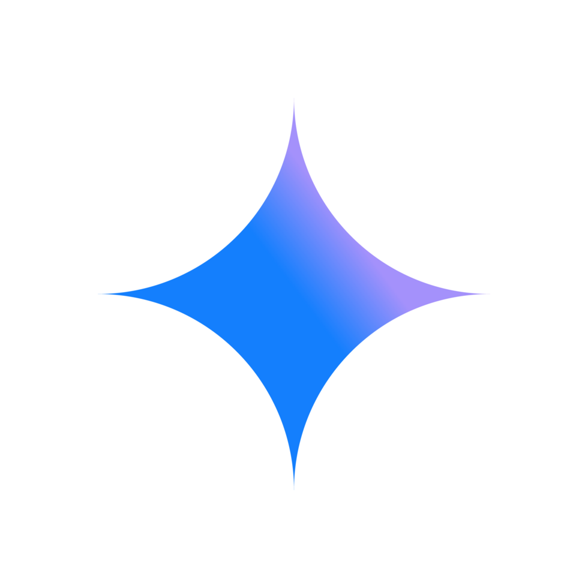
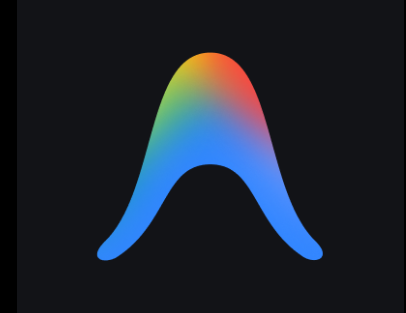
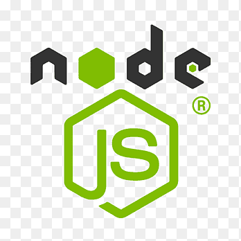
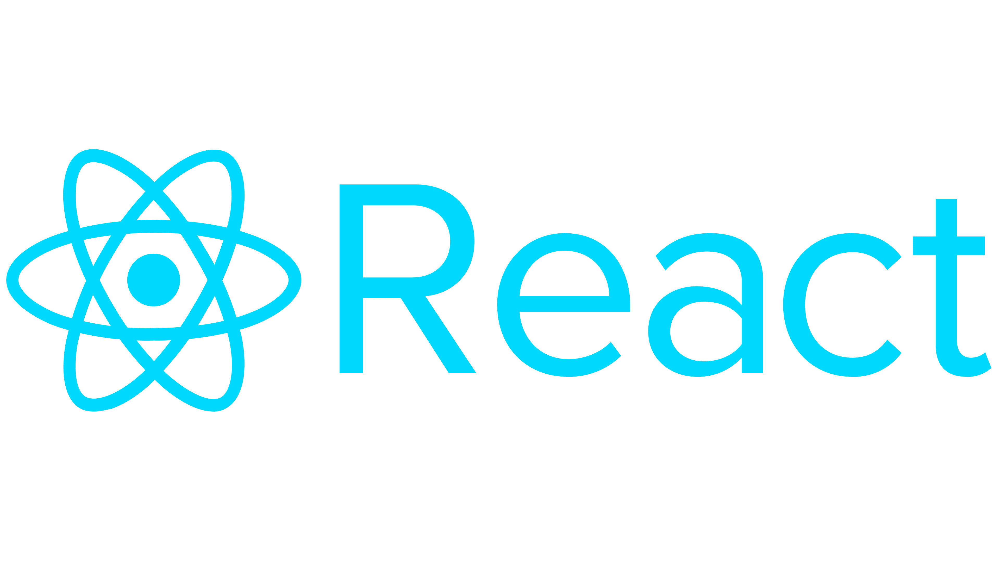
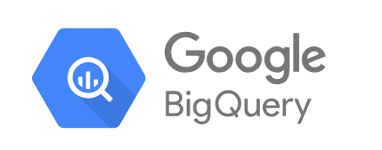

Engineering intelligent systems that run in production.
I build applied-AI products end to end: distributed AI pipelines, fine-tuned LLMs with RAG, and AI automation, and I run the full-stack platform they live on. Currently a Forward Deployed & AI Engineer at YoC (Your Online Conversation), a UK travel business, where I've owned the AI systems and the delivery platform end to end, from architecture through to operations.
AI & ML Engineering
Fine-tuned LLM chatbots (LoRA/QLoRA/PEFT) with RAG, multimodal Gemini pipelines, and speech/OCR research on Hugging Face, grounded, evaluated, and shipped.
Systems & Platform
Fault-tolerant distributed backends, DB-coordinated job queues, and a self-hosted Kubernetes (k3s + GitOps) platform I own end to end, from design to operations.
Aesthetic Front-End
React & TypeScript interfaces with a real eye for craft: clean information design, motion with restraint, and dashboards people enjoy using.
From prompts to production-grade AI.
I joined YoC as an AI Engineer in July 2025 and now work as a Forward Deployed Engineer, shipping a suite of systems end to end (architecture through deployment and operations) for YoC and its brands Flightcatchers and Polani Global Technologies. My work spans applied AI (fine-tuned LLMs, RAG, Gemini analytics), the fault-tolerant backends behind it, and the CI/CD, authentication, and Kubernetes platform that ship it all securely to production. I also own the telephony and network layer: production Asterisk/FreePBX contact-centre systems, Linux server administration, and firewall/edge security in regulated, bank-facing deployments.

BRANDAwarded for AI & automation impact.
Emerging Talent, AI Automation Department
Recognised for the highest standards of excellence, for the impact of the distributed-AI and automation work delivered across the year.

Call-analytics at scale.
Customer Call Sentiment & QC Analyzer
Call recordings arrive all day and need transcribing, scoring, and storing: fast, reliably, and never twice. I built a DB-coordinated distributed worker system that processes 500+ hour-long calls in roughly 10 minutes, turning hundreds of hours of manual review into structured, queryable insight.
- Dynamically scalable workers with adjustable throughput; concurrency-safe by construction
- Fault-tolerant, horizontally scalable: batched polling & parallel async execution
- Gemini 2.5 multimodal: audio → transcript → strict-JSON QC scorecard mapped to the call-centre SOP
- Escalation detection with email + Google Chat alerts
- Re-platformed ingestion off third-party cloud sync onto a collector at the recording source, removing a shared-quota dependency from the critical path
- Tuned worker concurrency against measured results, lifting steady-state throughput of the ingest stage from roughly 42 to 186 recordings an hour
A production platform I own end to end.
Self-hosted k3s + Argo CD platform
I migrated the company's apps off shared cPanel hosting onto hardened cloud infrastructure I own end to end, and built a self-healing GitOps platform around them, so deployment became a git push instead of manual server work, with automatic sync, self-healing, and per-app isolation.
- k3s chosen over managed Kubernetes / Docker Swarm on cost & reliability
- Traefik ingress with automatic certificate issuance and renewal via cert-manager
- GitHub Actions build → private container registry → Argo CD continuous delivery, plus scheduled batch workers
- Defence-in-depth at the edge: least-privilege ingress rules and centrally managed secrets
- Workload-to-workload isolation rolled out and then verified service by service against live traffic, rather than assumed from configuration
- Right-sized compute and cut monthly infrastructure spend roughly 55% by consolidating onto self-managed infrastructure
Telephony systems that survive production.
Production experience across enterprise telephony, Linux systems, network security, and containerised cloud infrastructure, delivered in regulated environments including banking and contact-centre deployments.
Agent → IVR Handoff
Built a production feature for a live Asterisk/FreePBX contact-centre system letting a live agent drop a caller back into the IVR at a specific menu step, triggered either from the agent's CRM softphone over a REST API or a DTMF feature code on the agent's handset.
- Resume path built on Asterisk Stasis channel events: detects channel-left-bridge, then re-enters the caller at a configured IVR node via a gateway service
- Shipped as a config-gated module in its own namespace so the core IVR engine files stayed untouched, a hard requirement for a system already live in production
- Integrated with an external CRM vendor's API, reconciling a stable per-caller interaction ID against a per-agent session ID that changes on transfer
- Built a WAV ↔ GSM transcoding endpoint for telephony-compatible prompts and recordings
PJSIP & SIP Interop
Configured and debugged PJSIP extensions across encrypted and unencrypted transports, including certificate binding and enforcement of modern TLS. Traced codec and media-encryption negotiation failures across desk-phone and WebRTC softphone clients using SIP signalling analysis and TLS handshake testing.
Linux Systems Administration
Administered Debian-based PBX servers on a custom web and load-balancing stack. Owned the full TLS certificate lifecycle, including wildcard installs, chain/PFX bundling, and forced reinstalls across dual listeners, and tuned intrusion-prevention and access-control rules.
Networking & Security
Resolved SIP transport and media-path faults across firewall and NAT boundaries, working over SIP, RTP, TCP, UDP and TLS with multi-subnet troubleshooting. Hardened proxied origins and applied WAF/edge controls in bank-facing deployments.
Systems I've shipped.
A connected set of production applications for YoC and its brands, each owned end to end, from database to UI to deployment.
Fine-tuned LLM Chatbots
Domain-specific chatbots fine-tuned with LoRA / QLoRA / PEFT, grounded by Retrieval-Augmented Generation over a Chroma vector database, with tokenization, embedding, quantization & inference-optimization pipelines on Hugging Face Transformers.
DD Accountings / Recocheck
Normalises 8 airline/GDS report formats into one canonical ticket key and flags variances against the accounting system to the penny (£0.01), with a daily-totals engine and an admin fraud-review board. Added a fourth live GDS feed in Nov 2026, the first to carry refunds, which meant handling signed amounts and a settlement date window so a refund stops reading as a variance.
Extended into finance reporting: a debtors ledger with ageing buckets and per-segment splits that reports net exposure rather than gross, and a margin-review module built to the finance team's own lead-sheet columns, so flagged bookings arrive in the shape they already work in.
Post-Sales Upsell CRM
A multi-agent Kanban pipeline turning flight bookings into upsell revenue: optimistic record locking, JSONB audit trails, brute-force lockout, RLS, and idempotent bulk CSV import.
Feedback & Review Platform
Post-flight NPS + Google-review generation with AI-assisted email automation (cutting template code ~90%) and real deliverability engineering: DMARC strict alignment, RFC 8058 one-click unsubscribe, throttled duplicate-safe queue.
Then measured it properly and found the reporting itself wrong: a response rate counting rows instead of people, NPS scored on the wrong bands, and two clocks that disagreed. Rebuilt the funnel on cohorts with a stage-by-stage invariant, so no stage can report more than the one above it, and the real drop-off became visible for the first time.
Cross-App Data Lake
A Python ETL that auto-discovers each app's schema and loads monthly data into Google Cloud Storage (Parquet, Hive-partitioned) for BigQuery analytics, with post-write validation.
Single Sign-On Portal
One Google login federating the whole suite across subdomains: OAuth 2.0 / OpenID Connect, self-issued JWTs, and role-based access control with per-app entitlements.
Company-Wide Data Layer (CDP)
Diagnosed a cross-app customer-data platform whose loader was ingesting the same sale from three overlapping source systems, inflating every revenue and lifetime-value figure on its dashboards. Rebuilt the loader to deduplicate against the canonical sales ledger, then delivered a penny-exact source-to-screen reconciliation pack for sign-off.
Now also the reporting surface over it: a per-app people and ownership roster assembled from the systems of record, plus centralised access reporting, so questions about who uses what are answered from data instead of recollection.
Cross-Region Database Consolidation
The same CRM data lived in two regional databases behind two deployments of one app, and the two drifted. I consolidated reads and writes onto a single database, retired the second deployment, and left a scheduled sync maintaining the historical copy, which by design no longer tracks it row for row.
Three defects surfaced only under real traffic, never in tests: array-typed columns compared wrongly, deleted records resurrecting on the next sync, and a refresh loop racing its own reload. Matching row counts turned out to prove nothing about whether the sync was correct.
Bulk Import Queue Latency
A bulk-import service was stalling its own queue. Moving the CPU-bound parsing off the request path and onto worker threads took queue lag from 12.7 seconds to 23 milliseconds.
The crashes that remained looked like the same fault but were memory exhaustion, not blocking. Measuring peak usage instead of assuming gave the workload a correct size and the team a published row ceiling to plan imports against.
App Directory & Ops Hub
One internal place that answers what the estate actually runs, with an app directory the operations team edits themselves. Built inside a tool staff already sign in to rather than shipped as one more login, after an embedded version proved it could never authenticate inside a frame.
Org-Wide Security Audit
Led an organisation-wide security review across the company's full repository estate, delivering a prioritised report on data-exposure and access-control risk and driving remediation of the highest-severity findings with the owning teams.
Research & beyond the day job.
Memoni Low-Resource Language AI
Speech recognition & Urdu→Memoni translation for an unwritten language: cross-script transliteration folding, pivot-language pseudo-labels, and a fine-tuned wav2vec2/CTC model on Hugging Face.
OmiQo: Marketplace App
Flutter customer + vendor apps owned end to end on a NestJS/Prisma/PostgreSQL backend: real-time Socket.io order queues, PayPro payments with webhook reconciliation, and S3 document processing.
RL Dynamic Job Scheduling
Designed a reinforcement-learning scheduler for deadline-aware dispatch: full MDP formulation, ETA-accuracy reward design, and algorithm analysis (DQN / PPO / A2C). Inspired by Uber's DeepETA.
What I build with.







Verified foundations.
Machine Learning Specialization
Taught by Andrew Ng. Supervised learning (linear and logistic regression, neural networks, decision trees), unsupervised learning (clustering, anomaly detection), recommender systems and reinforcement learning, built with NumPy, scikit-learn and TensorFlow.
- Supervised Machine Learning: Regression and Classification
- Advanced Learning Algorithms
- Unsupervised Learning, Recommenders, Reinforcement Learning
Google Data Analytics Professional Certificate
The full analyst workflow: asking the right question, preparing and cleaning data, analysing it in spreadsheets and SQL, and communicating the result through visualisation in Tableau and R, closing with a capstone case study.
- Foundations: Data, Data, Everywhere
- Ask Questions to Make Data-Driven Decisions
- Prepare Data for Exploration
- Process Data from Dirty to Clean
- Analyze Data to Answer Questions
- Share Data Through the Art of Visualization
- Capstone: Complete a Case Study
Let's build something intelligent.
Open to AI-engineering and full-stack roles, remote or Karachi-based. The fastest way to reach me is email.